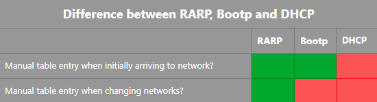

There are lots of other internet protocols apart from IP, such as:
Error-reporting protocol used in the Internet.
Routers use this protocol to generate error messages to the source IP address when network problems prevent delivery of IP packets.
Here is a list of those error messages:
There really isn't much else to this protocol. Just a bunch of error messages.
ICMP is used quite often in traceroute commands that deal with trying to find all intermediate nodes between a sender and destination.
The Address Resolution Protocol (ARP) is used to route a packet to the correct LAN.
Once you arrive at the LAN, you need to know the MAC address of the address.
So in a nutshell, ARP maps an IP address to a MAC address.
The ARP protocol is only used by the border routers in a network.
Figure 5.9a
In Figure 5.9a shown above:
Let's imagine 'Host 1' wants to send a packet to eagle.cs.uni.edu (some random website in the CS network)
The first thing Host 1 needs to do, is find out the IP address of eagle.cs.uni.edu
The second thing Host 1 needs to do, is find out the MAC address of Host 2:
Host1("are you 192.32.65.5 ?");
Host2("yeah that's me, also my MAC address is E2");
Host1("cool cheers bro");
FDDI is often a common central ring where routers from a larger WAN are connected. FDDI is just a data transmission standard when using fiber optic cables.
The Reverse Address Resolution Protocol (RARP) assigns an IP address to the host.
It used to be done manually:
Like I said though, it's manual. RARP is no longer used because of how manual the process is.
The BOOTstrap Protocol (BOOTP) does exactly the same thing as RARP - it assigns an IP address to the host.
HOWEVER... moving from one LAN to another LAN no longer requires manual input from the database administrator.
So the database is not as static as it was in RARP.
When a BOOTP server receives a request, it looks in its database for a matching entry and then returns the result to the host.
Also BOOTP uses the UDP transport layer protocol. UDP messages are passed by routers.
Disadvantages of BOOTP:
The Dynamic Host Configuration Protocol (DHCP) does exactly the same thing as RARP and BOOTP - it assigns an IP address to the host.
The main difference with DHCP is that you no longer have to manually enter into the table the IP address. This was the big disadvantage of RARqP and BOOTP.
So the database not static at all anymore.
How does DHCP do this?
Here's a cool table to summarise everything:
